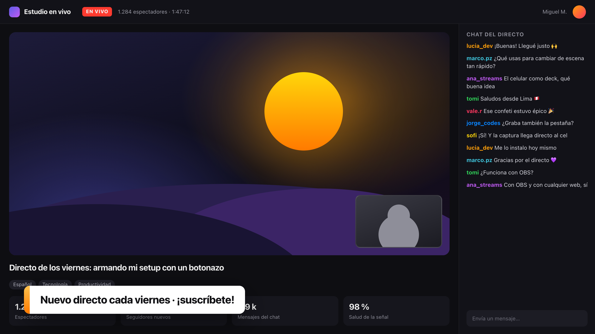

Transmite y graba con OBS Studio
Inicia el directo, cambia de escena, silencia el micrófono y muestra carteles en pantalla. Los botones se iluminan con el estado real de OBS.
En vivo con cronómetroEscenasFuentesCarteles y confeti
estudio-en-vivo.app/panel
